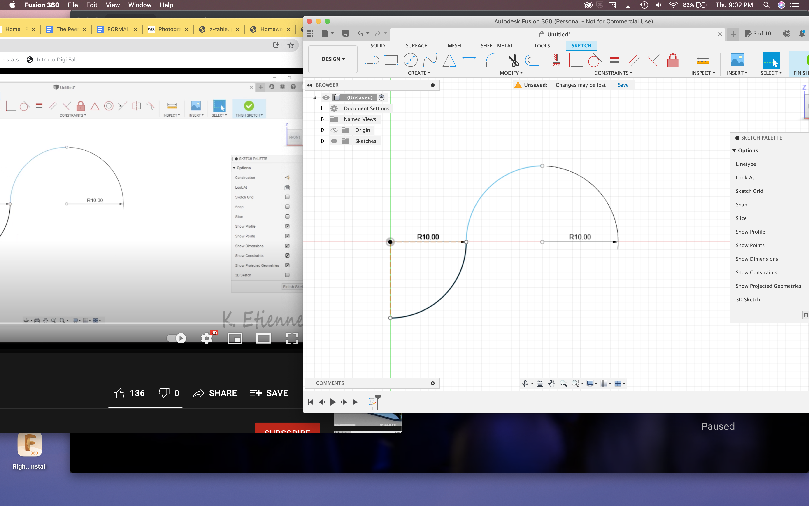
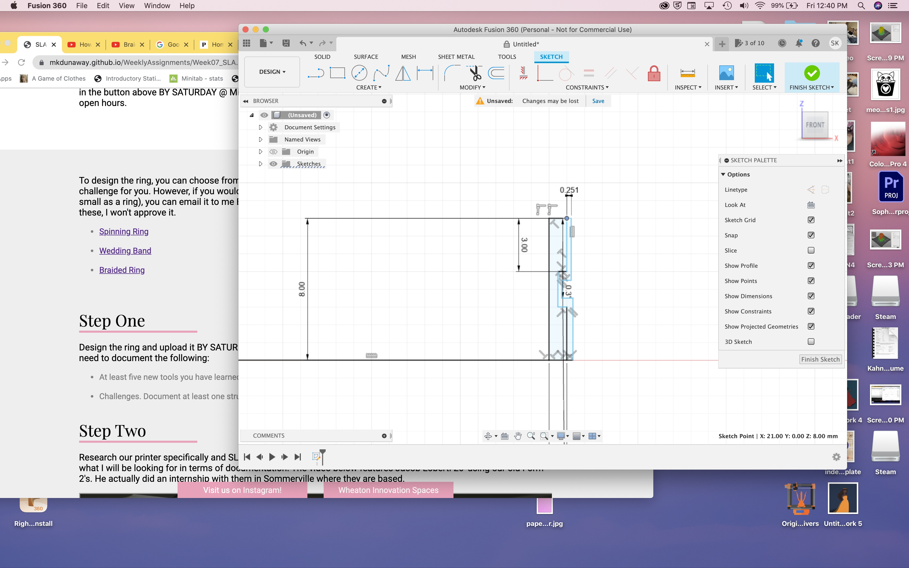

SLA Printing
This project was super interesting, I enjoyed learning more about how to use Fusion!
SLA Printing is similiar to FDM printing, as it is another kind of 3D printing! SLA printing works better for designs with lots of small details - like the ring I'll be making in this project - and uses resin as opposed to filiment. At first I wanted to make a braided ring. I thought it would look super cool! I started trying to follow along in the video, but after a few steps, I was finding it really difficult to follow. Because the video had no spoken or written words, it was hard to keep up. Also, something about the background music that the creator chose kept really hitting me and putting me in sensory overload. So, I decided to switch to the spinning ring.
The spinning ring tutorial was much easier to follow! Although the creator spoke quickly and their screen was written in ... german? it was still way easier to follow.
One new tool I learned how to use, though not fully new, was simply building the design on the X plane. For the vase design, everything was built from the bottom up, but for this one, I was building the inside, and then turning it into a cirlce. It was super cool!


Here is another tool I learned how to use! The "inspect" tool. This allowed me to see the inside of the design even when it was in it's solid form. Here I was able to round the edges of the two bodies that make the spinning ring.


Now that the bodies of my ring were finished, it was time to add the text! This is another new tool that I learned how to use. I struggled a bit with placing the text box in the right spot, but managed to get it to work.


Now it was time for me to emboss the words onto the ring! Here I learned two new skills, both how to emboss and how to deboss! Embossing is actually when the letters or design end up raised on the body, whereas debossing is where the letters or design are imprinted into the body. For this project, I actually wanted to DEboss!


Now, I actually goofed up a little bit! I was confused about the different kinds of printers, and went in and tried to print my design a few times using the FDM printer! It did not work out right, because the design is too small and detailed.
Here is my design file and the final print!

I went to the digi lab twice on wednesday to pick up my print, and both times it wasn't done. The second time they were curing, and Tuna let me look at them to take a picture! I actually can't quite tell which one is mine, so hopefully after a few more people pick theirs up it will be more clear!
https://drive.google.com/drive/folders/1BmDBmeUdvxHu3OaLNdp93L6q5hhe3aBw
https://drive.google.com/file/d/1wl3V95IyBo7PpukvED9_s7L9DRPL0Kt7/view
Thanks for reading!